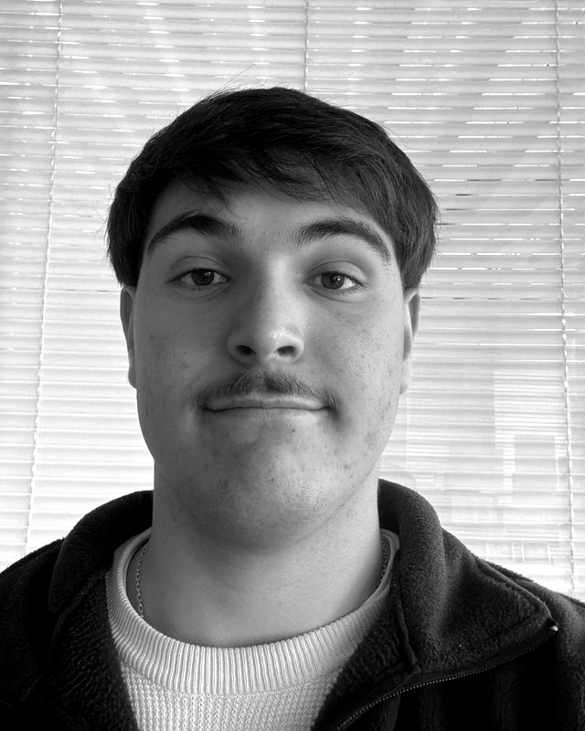
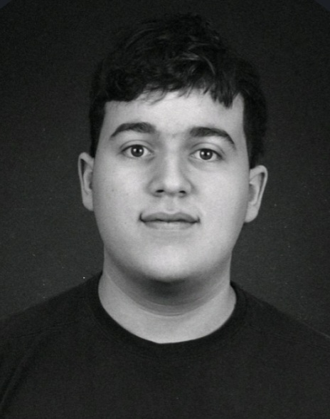
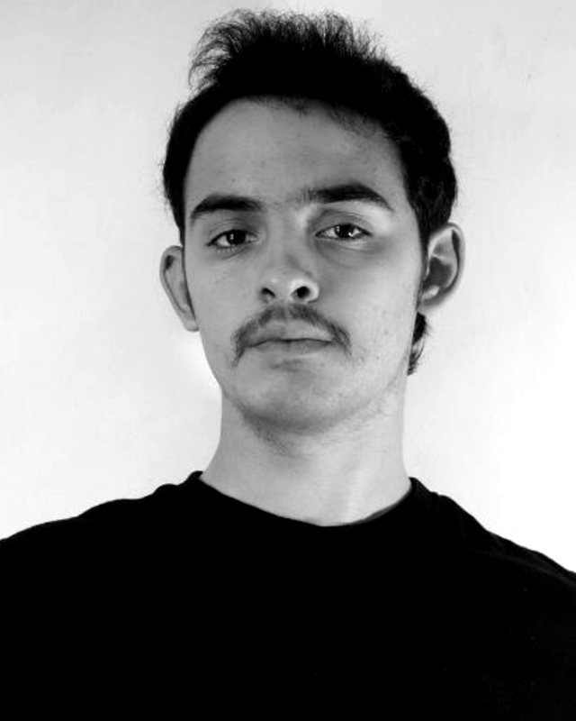

Un cockpit de carreras con movimiento en 3 ejes, triple pantalla y volante con force feedback, para que cualquier aficionado sienta por cinco minutos lo que siente un piloto en el circuito.
01 · Contexto
EXPO PINARFestival cultural del automovilismo · Ciudad de la Costa
Un equipo de simracing de calidad cuesta varios miles de dólares. Para el público general, el acceso a uno con movimiento es casi nulo. El festival es el lugar para democratizar esa experiencia.
02 · El circuito
El Pinar,
curva a curva.
El simulador corre Assetto Corsa con el circuito de El Pinar: el mismo autódromo donde está el stand, ahora para manejarlo desde el cockpit.
- Simulación
- Assetto Corsa · mod El Pinar
- Autos
- Superturismo Nacional o experimental
- Sesión
- 5 o 10 minutos
Trazado: © colaboradores de OpenStreetMap (ODbL).
03 · El stand
Seis pasos.
Un solo recorrido.
- ReservaTurno desde el celular con QR. Cobro en efectivo o Mercado Pago.
- AvisoCola virtual con hora estimada y notificación cuando faltan 5 minutos.
- Briefing60 segundos: cómo frenar, dónde está la parada de emergencia, qué ayudas están activas.
- Sesión5 o 10 minutos en Assetto Corsa, en el circuito de El Pinar, con un Superturismo o un auto experimental.
- RankingLa mejor vuelta entra al ranking del día, en la pantalla del stand y en la app.
- Encuesta y premioEncuesta de dos preguntas. El más rápido del sábado gana vueltas reales junto a un piloto del campeonato nacional.
04 · Plataforma 3DOF
El auto se mueve.
Vos también.
- 01CabeceoEl cockpit se inclina hacia adelante y hacia atrás.
- 02BalanceoSe inclina hacia los costados, curva a curva.
- 03Elevación y tracciónSube y baja con el terreno y la aceleración.
- PantallasTriple monitor 27"
- VolanteDirect drive con force feedback
- PedaleraCon vibración
- ButacaBaquet, cinturón de 4 puntos
- SimulaciónAssetto Corsa · 60 fps estables
- SeguridadParada de emergencia · desde 12 años y 1,40 m
05 · Círculo dorado · de adentro hacia afuera
Por qué
La emoción de pilotar un auto de carreras no debería estar reservada a quien puede pagar un equipamiento de miles de dólares.
Cómo
Una experiencia completa y cuidada: cockpit con movimiento, el circuito real, turnos sin fila desde el celular y un ranking que suma competencia.
Qué
Un stand de simulación con plataforma 3DOF, operado los dos días de EXPO PINAR, con turnos accesibles y patrocinadores del rubro.
Propósito
Acercar el automovilismo de competición al público del festival y ayudar a posicionar a Canelones y su autódromo como referente del deporte motor.
06 · Objetivo general
Diseñar, montar y operar el stand para que al menos 220 personas vivan la experiencia, con una satisfacción de 4,3 sobre 5 o más, sin superar USD 10.000, con un equipo de tres personas, entre octubre de 2026 y abril de 2027.
Los criterios de éxito los definen la organización, el público y el equipo. Cuando chocan, prevalece la experiencia del público.
07 · Ciclo de vida
26 semanas.
Cuatro ciclos en paralelo.
Enfoque ágil incremental: cada ciclo planifica, ejecuta y revisa un subproducto funcional. El cronograma se construye hacia atrás desde una fecha que no se mueve.
Deslizá el cronograma hacia los costados →
08 · Presupuesto
USD 10.000 como tope.
Lo esencial primero.
Riesgos
Diez riesgos.
Cada uno con respuesta.
Cada riesgo se mide por probabilidad × impacto, de 1 a 3 cada uno. Las luces marcan el nivel sobre un máximo de 9.
09 · Bandera a cuadros
Cualquier aficionado.Cinco minutos.Un piloto en El Pinar.
Un stand pensado para volver: equipamiento reutilizable y un formato replicable en otras fechas del campeonato.
- Gerente de proyecto
- Gerónimo RevetriaCoordina, negocia con AUVO y patrocinadores
- Líder técnico de simulación
- Juan Ignacio BustamanteHardware, software, operación y seguridad
- Líder de diseño y experiencia
- Ismael IbarburuInvestigación con usuarios, stand, ranking y contenido



Licenciatura en Diseño Multimedia · Universidad ORT Uruguay · Docente D.Ind. Javier Terra
Modelo 3D: Ferrari 458 Italia por vicent091036 (vía ejemplos de three.js) · Trazado: © colaboradores de OpenStreetMap